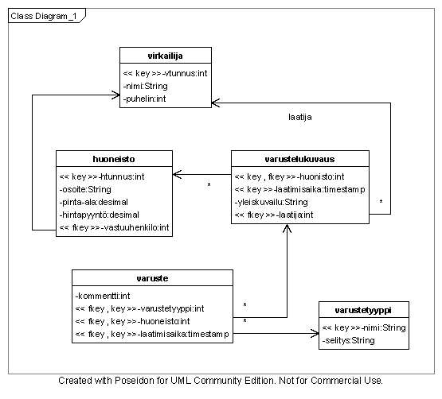
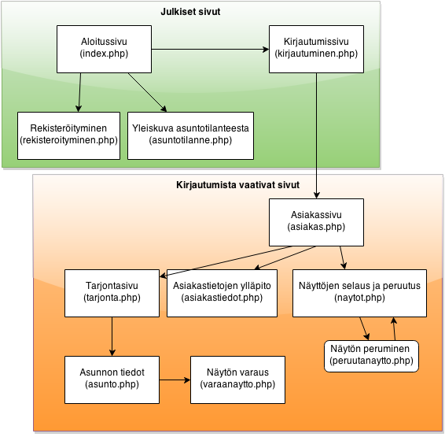

Dokumentaatio-ohje
Kurssilla määritellään, suunnitellaan ja toteutetaan pieni www-alustalle toteutettava tietokantajärjestelmä.
Tämä dokumentti antaa suuntaa harjoitustyöltä odotettavasta dokumentaatiosta.
Dokumentissa tulee olla selkeä kappalejako, kansilehti ja sisällysluettelo. Tekstin tulee olla kieliasultaan selkeää. Dokumentaatio tulisi palauttaa mieluiten yhtenä pdf-tiedostona joka kuvaa koko järjestelmän, tarvittaessa kuvat voi palauttaa irrallisina.
1. Johdanto
Johdantoon kirjoitetaan lyhyt, ytimekäs kuvaus siitä, mikä on työn aihe, mitä työllä kuuluisi pystyä tekemään ja mitä tekniikoita siinä käytetään.
- Järjestelmän tarkoitus
- Tiivis kuvaus siitä mistä on kyse.
- Millaisen toiminnan tukemiseen järjestelmä on tarkoitettu.
- Mitkä ovat järjestelmän tavoitteet.
- Nämä tiedot saa yleensä tehtäväkuvauksesta, kirjoita kuitenkin omin sanoin.
- Toteutus-/toimintaympäristö
- Missä ympäristössä työ toteutetaan (yleensä laitoksen users-palvelimella Tomcat- tai Apache-palvelimen alla)
- Täytyykö web-sovelluksen alustajärjestelmän tukea jotain tiettyä ohjelmointikieltä. (esim. Java, Ruby, PHP..?)
- Jos edellytetään jotain sovelluskehystä tulisi sekin mainita.
- Täytyykö käyttäjän selaimen tukea jotain tiettyä ohjelmointikieltä (esim. javascript?).
- Edellyttääkö ohjelmisto jonkun tietyn tietokannan käyttöä vai voiko sitä vaihtaa helposti. Useimmat työt toimivat vain yhdellä kannalla.
2. Yleiskuva järjestelmästä
Käyttötapauskaavio
Käyttötapauskaavio näyttää järjestelmän sidosryhmät ja miten ne liittyvät järjestelmään. Tällä kurssilla kehitettävissä järjestelmissä sidosryhminä ovat enimmäkseen järjestelmän käyttäjäryhmät. Muita mahdollisia sidosryhmiä olisi esimerkiksi toiset järjestelmät. Harjoitustyössä käyttäjäryhmien tulisi osaltaan näkyä kyseisille ryhmille suunnattuina toiminnallisuuksia.
Käyttötapauskaaviossa käyttötapaukset kuvataan järjestelmän sisällä ja sidosryhmien yhteydet järjestelmään esitetään yhteyksinä käyttötapauksiin. Kaavion kuvaa järjestelmästä voisi kuvailla esimerkiksi “Tällaisia asioita järjestelmässä voi tehdä, ja nämä ryhmät tekevät näitä asioita”.
Kaavion lisäksi käyttäjäryhmät sekä tärkeimmät käyttötapaukset kuvaillaan erikseen myös tekstinä.
Esimerkki
Käyttäjäryhmät
Annetaan lyhyt kuvaus järjestelmän sidosryhminä toimivista käyttäjäryhmistä.
Esimerkki
Jokamies
Jokamiehellä tarkoitetaan ketä tahansa, joka Internetin välityksellä tulee lukemaan KatonAlle yhtiön www-sivuja.
Kaikki muut sidosryhmät kuuluvat myös tähän sidosryhmään.
Asiakas
Asiakas on rekisteröitynyt käyttäjä.
Vuokranantaja
Vuokranantaja on rekisteröitynyt henkilö, joka on antanut asunnon KatonAlle yhtiölle välitettäväksi.
Työntekijä
Työntekijä on KatonAlle yhtiön palveluksessa oleva henkilö.
Johto
Johdolla tarkoitetaan työntekijöitä, joiden tehtävänä on tehtävien anto ja asioista päättäminen.Käyttötapauskuvaukset
Käyttötapauksella tarkoitetaan järjestelmän avulla hoidettavaa tavoitteellista tehtäväkokonaisuutta. Esimerkiksi tilauksen kirjaus, tilauksen peruutus ja laskun tulostus ovat tehtäväkokonaisuuksia, joita on luonnollista mallintaa käyttötapauksina. Tärkeimmistä käyttötapauksesta kuvataan sen sisältö: mitä käyttötapauksessa tehdään. Raporttien kohdalta kerrotaan, mitä tietoja raporttiin sisältyy.
Käyttötapausten avulla määritellään, mitä järjestelmällä tehdään. Voit luonnostella käyttötapauksia esimerkkitapausten avulla. Esimerkkitapauksessa toiminnan kohde on kiinnitetty. Esimerkiksi ‘ilmoittautuminen Informaatiojärjestelmät kurssin harjoitusryhmään 3’ on esimerkkitapaus käyttötapauksesta ‘luentokurssille ilmoittautuminen’. Voit esittää esimerkkitapauksia myös dokumentissa havainnollistaaksesi käyttötapauksia. Käyttötapaukset kannattaa esittää käyttäjittäin ryhmiteltynä tärkeysjärjestyksessä.
Sisällöltään ilmeisimpiä käyttötapauksia kuten kirjautumista ja rekisteröimistä ei tarvitse kuvailla, riittää että ne luettelee.
Esimerkki
Jokamiehen käyttötapaukset
Yritysinfon lukeminen:
Kuka tahansa voi käydä lukemassa yrityksen mainos- ja yleistietoja
mm. työntekijöiden puhelinnumerot ja toimistojen sijainnit.
Asuntotilanteen yleiskuvan selvittäminen:
Käyttäjälle näytetään, minkä tyyppisiä asuntoja kullakin alueella
kyselyn suoritushetkellä on tarjolla vuokralle ja kuinka monta näitä on tarjolla.
Esimerkki: Millaisia asuntoja on tarjolla Kruunuhaassa?
Muita käyttötapauksia: rekisteröityminen, kirjautuminen3. Järjestelmän tietosisältö
Järjestelmän tietosisältö kuvataan käsitekaavion avulla. Käsitekaavio on järjestelmään säilöttävälle tiedolle käsitetason malli, jonka perusteella johdetaan toteutustason relaatiotietokantakaavio.
Esimerkki
Kaavion lisäksi täytyy kuhunkin tietokohteeseen liittää selitys, jossa määritellään kyseinen kohde. Attribuutit täytyy kuvailla ellei merkitys ole nimen perusteella itsestään selvä. Jos attribuutilla on koodiarvoja tai rajattu arvojoukko, on arvojen merkitys myös selitettävä. Myös yhteydet täytyy määritellä. Alla on esimerkkinä yhden tietokohteen määrittely.
Esimerkki
Tietokohde: Huoneisto
Attribuutti Arvojoukko Kuvailu Osoite Merkkijono, max. 120 merkkiä Asunnon katuosoite muodossa Paratiisitie 13, Ankkalinna, Calisota, Yhdysvallat Pinta-ala Desimaaliluku Asunnon pinta-ala neliömetreinä Hintapyyntö Desimaaliluku Myyjän hintapyyntö euroina. Huoneisto, joka on annettu myytäväksi, mutta joka ei vielä ole katalogissa voi olla kuulumatta yhdellekään virkailijalle. Kukin huoneisto voi olla kerralla vain yhden virkailijan hoidettavana, mutta virkailijalla voi kuitenkin olla hoidettavanaan useita huoneistoja. Huoneistoon voidaan liittää myös varustelukuvauksia. Yksi varustelukuvaus voi kuvata vain yhtä huoneistoa.
4. Relaatiotietokantakaavio
Relaatiotietokantakaavio on teknisempi dokumentti, jossa tiedon säilömiseen käytettävän tietokannan rakenne esitetään kaaviokuvana. Kaavioon täytyy sisältyä taulujen välisten viiteyhteyksien ja avainten määritykset. Jos relaatiokaaviossa on attribuutteja, jotka eivät esiinny käsitemallissa tai jonkin käsitemallin attribuutti on karsittu tai sen muotoa on muutettu on tästä erikseen mainittava. Yleissääntönä on, että relaatiotietokantakaavion tulee olla yhteensopiva käsitemallin kanssa.
Alla on esimerkki kaaviokuvasta. Nuolten tulisi lähteä vierasavainten kohdalta, pk = primary key, fk = foreign key.
Huomaa kuitenkin kuinka taulun varuste vieras pariavain (huoneisto,laatimisaika) on kuvattu yhdellä nuolella.
 Muunnossäännöt käsitemallista relaatiomalliin löytyvät Tietokantojen perusteet kurssin materiaalista.
5. Järjestelmän yleisrakenne
Tämän kappaleen tarkoitus on kertoa lyhyesti mistä jotakin toimintoa kannattaa ohjelmakoodissa etsiä. Järjestelmän yleinen hakemistorakenne esitetään selostamalla yleisellä tasolla lyhyesti mihin tarkoitukseen tarkoitettuja tiedostoja projektin hakemistot sisältävät, mihin mahdollisesti käytetyt kirjastot ja apuluokat on sijoitettu ja mitä erilaisia ohjelmakoodikomponentteja projektista löytyy (Esim. html-näkymä, apuluokka, tietokantaluokka, kontrolleri). Mikäli järjestelmällä on erillinen asetuksista vastaava tiedosto, kerrotaan sen sijainti samoin kuin mahdolliset tiedostojen nimeämiseen liittyvät käytännöt.
Tähän kappaleeseen laitetaan myös yleinen kuvaus siitä miten järjestelmä käyttää istuntoa ja mikäli järjestelmän osana on käytetty javascriptiä, pitää senkin toiminnan yleisperiaatteet dokumentoida tähän.
Esimerkki MVC-mallin mukaisesta php-projektista
Tietokantasovellusta tehdessä on noudatettu MVC-mallia. Kontrollerit, näkymät ja mallit
sijaitsevat hakemistoissa controllers, views- ja models. Käytetyt apukirjastot on sijoitettu
hakemistoon lib ja asetukset ovat tiedostossa settings.php.
Ylläpidon sivuista vastaavissa tiedostoissa on kaikissa admin-etuliite. Kaikki tiedostonimet on
kirjoitettu pienellä.
Tämän lisäksi ohjelmakoodin tulee olla dokumentoitua (kommentit / javadoc / phpdoc tms.) ja käyttää havainnollisia nimiä muuttujille ja funktioille/metodeille. Ohjelmiston tulee olla jaettuna komponentteihin järkevästi, siten että turhalta toistolta vältytään. Komponentteihin liittyvät yleistiedot on hyvä kirjoittaa myös ohjelmakoodin alkuun yleiskommentiksi, jolloin ne voi vain kerätä ohjelmakoodista dokumenttiin. Ohjelmakoodit sijoitetaan dokumentin liitteiksi.
6. Käyttöliittymä ja järjestelmän komponentit
Käyttöliittymän näkymien välisiä yhteyksiä on luontevaa esittää kaavioina. Seuraavassa kuvassa on esimerkki tällaisesta kaaviosta.

Laita jokaisen näkymää kuvaavan suorakulmion nimen alle myös merkintä siitä mikä/mitkä kontrolleritiedosto(t)/servlet(it-luokka pääasiallissti huolehtii sen näyttämisestä. Jos sivuilla on sivusiirtymiä, jotka eivät näytä sivuja, mutta esim. muokkaavat kantaa ja ohjaavat jollekin muulle sivulle, piirrä ne kaavioon pyöreinä tekstipalloina. Pyri siihen, että jokainen sivuston kontrolleri olisi kuvassa edustettuna.
Jos jonkin sivun käyttötarkoitus ei ole sen nimestä aivan ilmeinen, kirjoita siitä lyhyt kuvaus kaavion alle.
Sivukohtaisen julkisuusmäärittelyn voi dokumentoida ryhmittelemällä sivuja, kuten esimerkissä, tai voi esim. asianmukaisen siirtymän kohdalla kertoa, että tästä pääsee eteenpäin vain tunnistettu käyttäjä.
Mikäli sivustolla on navigaatiopalkki, jonka johdosta kirjautunut käyttäjä pääsee mistä vain mihin vain, kannattaa tämä mainita sanallisesti kaavion yhteydessä ja merkitä kaavioon vain sellaiset yhteydet, jotka olisivat olemassa ilman navigaatiopalkkiakin.
7. Asennustiedot
Lyhyehkö ohje, jonka tarkoituksena on toisaalta kertoa, miten sovellus on nyt asennettu ja toisaalta miten sen saisi asennettua uuteen ympäristöön. Uudella ympäristöllä tarkitetaan tässä jotakin usersin kaltaista palvelinta, jonka nettisivutila ja tietokanta on jo pystytetty, mutta varsinaista sovellusta ei ole kopioitu vielä palvelimelle, eikä tietokantayhteyden asetuksia säädetty oikeiksi.
Users-palvelimella tämä vastaa tilannetta, jossa kaikki wanna-alkuiset komennot ajettu, mutta nettisovelluskansioissa ei ole vielä mitään.
Asennusohjeesta tulisi ainakin käydä ilmi, minne käytettävän tietokannan asetukset (käytettävä tietokanta, käyttäjätunnus, salasana) tulee ohjelmistoa asentaessa määritellä.
Esimerkki PHP-sovelluksen asennustiedoista:
Asenna sovellus kopioimalla sen tiedostot palvelimen nettiin näkyvään hakemistoon (esim. usersin htdocs-hakemisto). Aseta sen jälkeen tietokannan yhteystiedot oikeaksi tiedostoon
libs/config.php. Voit kopioida asetustiedoston mallin tiedostostalibs/config.php.dist
8. Käynnistys- / käyttöohje
Tyypillisesti tässä riittää kertoa missä osoitteessa harjoitustyö on asennettuna ja millä voi kirjautua sisään.
Perusoletuksena on, että järjestelmän käyttäjä osaa käsitellä WWW-sivuja selaimella. Tähän liittyviä ohjeita ei siten tarvitse antaa. WWW-sovelluksen tulisi olla helppokäyttöinen ja intuitiivinen. Sivujen pitäisi itsessään sisältää riittävästi sivun käyttöön tarvittavaa informaatiota. Jos sivut ovat tällaisia, riittää antaa ohjelman käynnistykseen tarvittava URL sekä mahdolliset kirjautumiseen tarvittavat tunnukset. Jos käyttöön liittyy joitain yleisiä toimintajärjestykseen liittyviä asioita, ne voidaan kertoa tässä yhteydessä.
Näiden tietojen tulisi löytyä myös tuotettavan järjestelmän sivuilta.
Muista kertoa ohjaajalle kaikki testauksen vaatimat käyttäjätunnukset ja salasanat.
9. Testaus, tunnetut bugit ja puutteet & jatkokehitysideat
Miten olet testannut ohjelmaa? Kuinka laajasti testaus on toteutettu?
Mitä puutteita tai bugeja ohjelmassa on? Mitä lisäominaisuuksia ohjelmaan voisi lisätä?
10. Omat kokemukset
Mikä oli tietokantasovelluksen teossa helppoa? Mikä vaikeaa? Mitä opit? Muu vapaa sana.
11. Liitteet
Dokumentin liitteinä annetaan:
- Tietokannan määrittelevät create table lauseet, erillisenä SQL-tiedostona projektin git-repositoriossa.